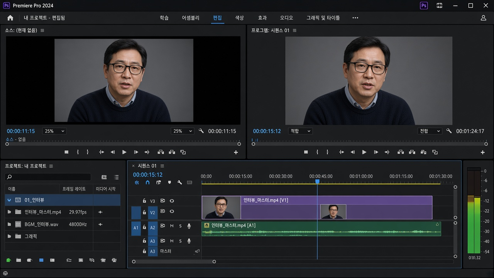
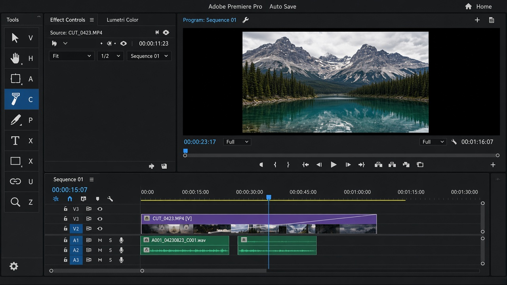

레슨 03
화면 네 칸을 읽기
컷은 도구가 아니라 화면을 어디에 두고 보느냐에서 시작됩니다. 네 패널만 기억하세요.
목표. Source, Program, Timeline, Project가 각각 무엇을 보여 주는지 구분합니다.
기본 편집 워크스페이스
상단에서 창 → 작업 영역 → 편집 또는 워크스페이스 탭의 편집을 고릅니다. 패널이 사라진 것 같으면 이 메뉴로 되돌립니다.

편집 워크스페이스. 왼쪽 위 Source, 오른쪽 위 Program, 아래 Timeline, 왼쪽 아래 Project.
왼쪽 위
Source
원본 클립을 미리 봅니다. 자르기 전에 쓸 구간만 고를 때 씁니다.
오른쪽 위
Program
시퀀스 결과입니다. 관객이 보게 될 화면입니다.
아래
Timeline
컷이 일어나는 곳입니다. 재생헤드가 지금 프레임을 가리킵니다.
왼쪽 아래
Project
가져온 클립·시퀀스 목록입니다. 폴더(빈)로 정리할 수 있습니다.
재생과 줌
- 스페이스바로 재생/정지합니다. J 뒤로, K 정지, L 앞으로. L을 여러 번 누르면 빨라집니다.
- 타임라인에 포커스가 있을 때 + -로 가로 줌합니다. 스크롤 휠로도 됩니다.
- \ 키는 시퀀스 전체를 한눈에 보이게 맞춥니다.
- S는 스냅입니다. 켜 두면 컷이 클립 가장자리에 붙습니다. 처음에는 켜 두는 편이 낫습니다.
 빨간 선이 재생헤드입니다. 스페이스와 JKL로 움직이며, + / - 로 타임라인을 확대합니다.
빨간 선이 재생헤드입니다. 스페이스와 JKL로 움직이며, + / - 로 타임라인을 확대합니다.
무엇을 보고 있는지 헷갈리면 Program(오른쪽)을 보세요. 그게 “지금 편집 결과”입니다. Source는 아직 시퀀스에 넣기 전 원본입니다.
도구 패널
타임라인 왼쪽의 세로 아이콘이 도구입니다. 컷편집에서 당장 쓰는 것은 두 개입니다.
- 선택 도구 V — 클립을 고르고, 가장자리를 잡아 늘리거나 줄입니다.
- 레이저 도구 C — 재생헤드 위치에서 클립을 자릅니다.

타임라인 왼쪽 도구 막대. 선택은 V, 레이저는 C입니다.
나머지는 06 트림에서 다룹니다. 지금은 V와 C만 오가면 됩니다.
확인